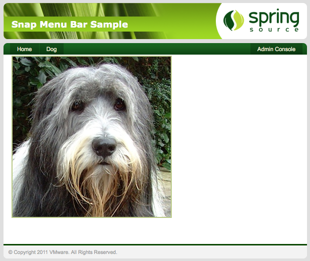

The sample application in the Zip file demonstrates all of the features of Snaps. You will cover this application in detail later, but for now install it to verify that you have a working Snaps install. Start the server up and check the output it produces contains the following:
<DE0004I> Starting plan 'org.eclipse.virgo.snaps' version '3.0.0'. <DE0004I> Starting bundle 'org.eclipse.virgo.snaps.api' version '3.7.0.BUILD-20130416153544'. <DE0005I> Started bundle 'org.eclipse.virgo.snaps.api' version '3.7.0.BUILD-20130416153544'. <DE0004I> Starting bundle 'org.eclipse.virgo.snaps.core' version '3.7.0.BUILD-20130416153544'. <DE0005I> Started bundle 'org.eclipse.virgo.snaps.core' version '3.7.0.BUILD-20130416153544'. <DE0005I> Started plan 'org.eclipse.virgo.snaps' version '3.0.0'.
Open up the Virgo Admin Console by navigating to http://localhost:8080/admin and then go
to the artifacts tab to deploy some new bundles. The first bundle to deploy is located at
/sample/org.eclipse.virgo.snaps.sample.animal-3.7.0.BUILD-20130416153544.jar, select it in the browser and
upload. In the terminal window you started the Virgo Server for Apache Tomcat in you should see the usual messages about the
bundle starting and this message:
<SN0000I> Host created for path '/animal-menu-bar'
This shows that the host has been registered and is ready for Snaps to attach to it. To view the application take
your browser to http://localhost:8080/animal-menu-bar/. You should be presented with a green looking
page that has a menu bar with two links on it. One will take you to the page you are currently on while the other goes
back to the admin page.
This is all very nice, but it's time to deploy another snap that will dynamicaly add some extra content to the app. The next bundle
to deploy is located at /sample/org.eclipse.virgo.snaps.sample.dog-3.7.0.BUILD-20130416153544.jar. Deploy it the same way
as the last one using the admin console and check the messages to verify it has been bound to the host:
<SN0010I> Snap bound to path '/animal-menu-bar/dog'
In your browser, go back to the application and refresh the page and a new menu item should now be present. If you click it a new page will load with content from the newly installed snap. In this case a picture of a dog.

You have now verified that your install is working and can continue on to learn how Snaps works and how you can use it to break up your web applications.